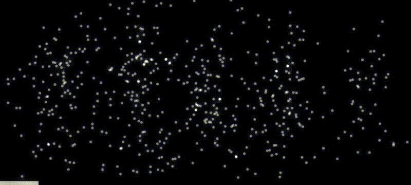

Young's Double Slit Experiment
But how can the evidence for the wave-nature of light be explained, if light is indeed made out of a collection of small particles called photons? The measured interference patterns agree almost perfectly with the theoretical predictions for electro-magnetic waves. The diffraction patterns for monochromatic light sent through single and double slit apertures are displayed above.
The confusion about the nature of light was indeed amplified, when Davisson and Germer proved experminentally in 1927 that electrons also displayed interference patterns. Everything seemed to be both wave and particle simultaneously. Suddenly philosphical disputes arose among the community of scientists about the properties of nature. Does nature violate the rules of logic? Niels Bohr tried to solve the problem by stating that particle and wave properties are "complementary", i.e. these properties never occur at the same time but belong to the same object. This explanation always felt to me like a word game and not a solution.
The solution in my mind was essentially found in 1926 by Max Born. He posited that the square of the interfering waves, i.e. their intensity, essentially represents a probability distribution for a photon to arrive at certain place. The interference pattern arises because a multitude of essentially identical photons randomly occur in agreement with the probability distribution.
The Probability Wave
Born's interpretation was confirmed, when single photons and electrons could be sent consecutively through a double-slit aperture. This is illustrated above for electrons. A single particle, photon or electron, does not create the diffraction pattern. The diffraction pattern is the result of a multitude of essentially identical particles randomly occuring on the screen behind the aperture. The screen is bright, where many particles arrive, and black, where none arrive. The level of brightness is measure for the probability of the particle to arrive at this place.
However, the solution has a severe drawback. Natural phenomena are no longer thought of as the predetermined effect of a cause. Instead, physics must describe nature as governed by chance. Naturally, many scientists rejected this conclusion. Einstein was opposed to this new theory although he had contributed to its emergence. He famously rebuked to Born:
God does not roll dice!
The debate is far from over. I invite anyone who has read this far to subscribe to my newsletter.